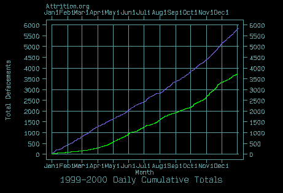
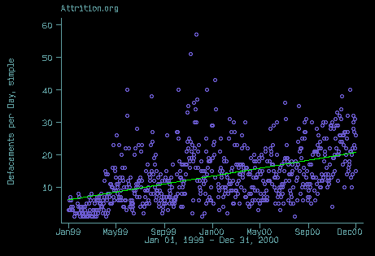
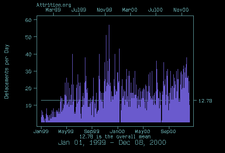
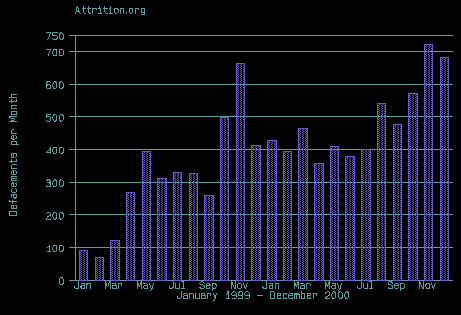
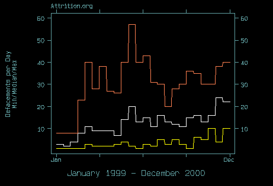

Updated through December, 31st. Yup, that's it.
Back to the main statistics page
Cumulative Total Comparison, 1999 vs. 2000
Defacements per Day, Linear Regression
Defacements per Day, Over All Mean
Monthly Min/Median/Max of Defacements Per Day
1999 vs. 2000 Daily Cumulative Total Comparison:

1999: Green, 2000: Purple
Defacements per Day, January 1999 through December, 2000: Linear Regression:

(The green line is a fitted linear regression)
Defacements per Day, January 1999 - December 2000:

(Note the Gap in Mid-January 2000 -- Attrition Down Time.
The gap just before the "Sep00" label was when Attrition Staff
attended Defcon)
Monthy Totals, January 1999 through December, 2000
:

Monthly Minimum, Median, Maximum Defacements per Day :
January, 1999 through December, 2000

Yellow: Minumum, White: Median, Orange: Maximum
Notes
First read the main statistics notes if
you haven't already.
The intent of this page is to illustrate overall trends in defacements regardless of webserver or OS platform. One aspect of that is that we have more data, since we're not restricted to when we began collecting OS and webserver data (August 1999), but restrict the time range from January 1999 to the present.
I have done away with the histogram, which apparently caused more confusion than clarity. If someone is seriously interested in histograms of the data, drop me a line, as I still produce them for internal usage. I have replaced the histograms with a min/median/max graph that is probably more meaningful to the average reader, and is easier to read in any event.
For more information, questions, rants, contact: munge@attrition.org
© 2000, 2001 Copyright Matt Dickerson for Attrition.org
Last modified: Mon Jan 1 15:34:12 EST 2001
Excerpts from this page may be reproduced if
Attrition and the URL
http://www.attrition.org/mirror/attrition/defacements-graphs.html are attributed.